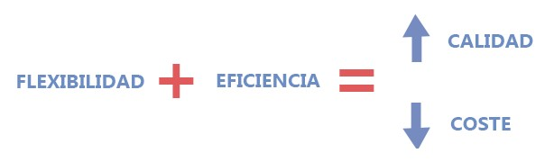

son un conjunto de métodos que permiten adaptar el modo de trabajo a las condiciones del proyecto, aportando flexibilidad, eficiencia y, por lo tanto, logrando un mejor producto a menor coste.
Aunque actualmente estas herramientas pueden aplicarse a todo tipo de empresas, la filosofía de las metodologías ágiles surgió en la industria del desarrollo del software, en una búsqueda de alternativas al método tradicional de trabajo, muy estructurado y estricto, extraído del modelo de desarrollo en cascada. Este proceso se consideraba burocrático, lento y muy poco eficiente.
Caracteristicas Principales
Entre sus principales características están:
- La cooperación entre equipos multidisciplinares y autogestionados.
- Una alta implicación de los usuarios o clientes.
- Una comunicación fluida.
- Revisiones constantes gracias a la realización de entregas regulares y en plazos cortos (sprints) a lo largo del proyecto.
- La posibilidad de medir el progreso.
- La adaptación a los cambios que vayan surgiendo sobre la marcha.
A la hora de trabajar con metodologías ágiles, el proyecto se divide en “partes” o tareas sencillas que se tienen que ir completando y entregando cada poco tiempo al cliente para que las revise.
De esta forma, y en el caso de hacer falta realizar cambios, estos se efectúan prácticamente al instante y únicamente en la parte implicada. Sin tener que esperar al producto final, ya que llegados a ese punto supondría tomar medidas de urgencia o, incluso, empezar de nuevo. Algo que venía sucediendo con las metodologías tradicionales o en cascada.
En cualquier caso, para que este procedimiento funcione es importante que los miembros de los diferentes equipos de trabajo o departamentos implicados en el proyecto se reúnan a diario y compartan el estado de las tareas asignadas: cuáles han finalizado, cuáles están todavía pendientes y con qué problemas se han topado. Así todo el mundo está al tanto del estatus general del proyecto, pudiendo ayudarse los unos a los otros si fuera necesario.
Ventajas de las metodologías ágiles
- La comunicación continua entre los equipos y con el cliente ayuda a detectar los errores e implementar las mejoras fácil y rápidamente. Esto repercute directamente en el producto final, siendo de mayor calidad y más acorde a lo que quiere el usuario.
- La satisfacción del cliente es mayor, ya que se siente uno más en el desarrollo del proyecto. En todo momento está informado de cómo va, participa de él y sus opiniones son tenidas en cuenta.
- Cada uno de los integrantes del equipo asume un compromiso y una responsabilidad para con los demás.
- Todas las partes del proyecto se trabajan a la vez, teniendo cada una de ellas un experto o responsable asignado. Esto añade velocidad y eficiencia al procedimiento.
- La productividad de la empresa aumenta, ya que los procesos de trabajo se agilizan y los costes se reducen.
- El retorno de la inversión es más inmediato. Con frecuencia, las empresas que trabajan con metodologías ágiles pactan con sus clientes ir recibiendo los pagos de aquellas tareas completadas y que ya cuentan con su aprobación. De este modo, el proyecto se rentabiliza conforme se va desarrollando.
Metodologías ágiles más utilizadas
Existen diversas metodologías ágiles, incluso muchas empresas deciden combinarlas con la finalidad de mejorar su día a día. Abajo te mostramos las más utilizadas:
- Scrum: esta metodología se lleva adelante en “Sprints”, es decir, procesos de trabajo que deben ser lo más cortos posibles. Al final de cada sprint, el equipo debe entregar una versión mejorada del proyecto para que sea analizada por todos los interesados; luego de eso, los evaluadores dan una devolución, lo que da inicio al proceso de mejora.
- Kanban: Kanban es una palabra japonesa que en español significa “tarjeta visual”. Esta metodología sugiere una comunicación en tiempo real y controla el trabajo a través de una línea de producción. Es decir, se crean tres columnas: pendientes, en proceso y terminadas. De esa forma, es posible clasificar las tareas y visualizar fácilmente sus avances.
Hay otras herramientas online similares a Kanban, como Trello y Monday.
- Extreme Programming o XP: esta es una metodología ágil creada para responder a ambientes muy cambiantes donde se necesita una retroalimentación permanente. Ella busca enfatizar la adaptabilidad de un proyecto, sólo así se conseguirá el resultado esperado.
Quienes trabajan con esta metodología deben entender que los cambios son inevitables y, muchas veces, más beneficiosos que un crecimiento estático.